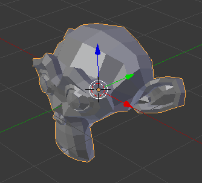
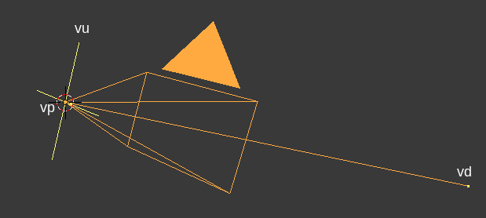
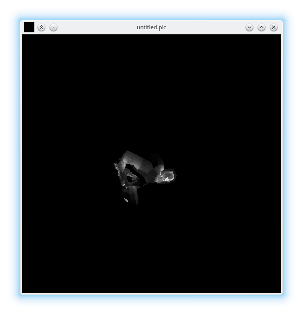
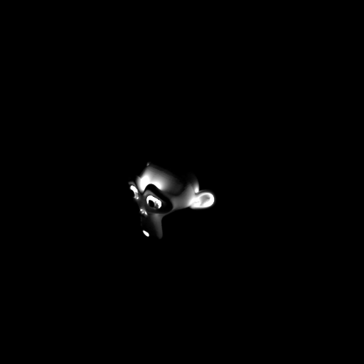

Radiance is the authoritative validated rendering engine out there. Unlike other rendering engines, which focus more on artistic license, Radiance focuses on scientific validation -- that is, the results are not just physically based, they will produce the exact same output as measured by a physical optical sensor. This is great if you'd like to produce an image that not only looks photo-realistic, but actually matches what a similar setup in real life would look like. As you'd expect, this appeals to scientists, and designers who work with light and materials.
In addition, Radiance is open-source, completely free, and is Unix-like. If you've used other tools that claim to do all of the above, it probably uses Radiance under the hood anyway and rebrands itself with a more friendly interface. However, working with Radiance directly will give you a finer grain of control over the image you produce, and as I will likely write about in the future, scale up to do highly complex renders. Today, we're going to dive into the guts of the tool itself and render a simple object. This can be a bit scary to those who are not particularly technical, and there's not a lot of friendly material out there that doesn't look like it's from a 1000-page technical manual. Hopefully this walkthrough will focus on the more practical aspects without getting too bogged down in technicalities.
To begin, I'm also going to assume you have Radiance installed, and know how to open up a terminal window in your operating system of choice. If you haven't got that far yet, go and install something simple like Ubuntu Linux and / or install Radiance. Radiance is not a program you double click on and see a window with buttons and menus that you can click on. Radiance is a collection of programs that work by typing in commands.
Let's create a model first. Start with a simple mesh with a minimum of
polygons. I am using Blender, which is a another
open-source, free, and Unix-friendly software. In this case, I have
started with a default scene, and arbitrarily replaced the default cube
with a mesh of the Blender monkey mascot. I have also given the mesh a
material, named white.

Using Blender is optional, of course, and you can use whatever 3D
program you like. Radiance works with the OBJ
format, which is an
open format, plain text, and beautifully simple. As such, export the
mesh to get yourself a resultant OBJ file, of which I have named
model.obj. The exported accompanying model.mtl file is largely
unnecessary right now: we will define our own materials with physical
units, of which the .mtl file is not designed to do. When exporting,
take care to only export the mesh, and ensure that the proper axes are
facing up.
In the same directory that you have your model.obj and your
model.mtl, let's create a new file which will hold all the materials
for your model. In this case, there is only one material, called
white. So let's create a new plain text file, called materials.rad
and insert the following in it:
void plastic white
0
0
5 1 1 1 0 0
It's the simplest possible material definition (and rather unrealistic, as it defines an RGB reflectance value of 1, 1, 1), but it'll do for now. You can read about how "plastic" (i.e. non-metallic) materials as defined in the Radiance reference manual. In short, the first line says we are defining a plastic material called white, and the last line says that there are 5 parameters for this material, and their values are 1, 1, 1, 0, 0 respectively. The first three parameters refer to the R, G, and B reflectance of the material. This definition is provided in the Radiance manual, and so in the future it will serve you well to peruse the manual.
Now, open up a terminal window in the same folder where you have the
model.obj and materials.rad file. We are going to run a Radiance
program called obj2mesh which will combine our OBJ with the material
definitions we have provided in our materials.rad, and spit out a
Radiance triangulated mesh .rtm file. Execute the following command:
$ obj2mesh -a materials.rad model.obj model.rtm
If it succeeds, you will see a new file in that same directory called
model.rtm. You may see a few lines pop up with warnings, but as long
as they are not fatal, you may safely disregard them. This .rtm file
is special to Radiance, as it does not work directly with the OBJ
format.
Now, we will create a scene in Radiance and place our mesh within it.
There will be no other objects in the scene. Let's call it scene.rad,
a simple text file with the following contents:
void mesh model
1 model.rtm
0
0
The first line simply defines a new mesh in the scene called model.
The second line tells it that it can find the mesh in the model.rtm
file. The final line (the zero) says that there are no parameters for
this mesh.
Now, we will convert our scene into an octree, which is an efficient
binary format (as opposed to all the simple text files we've been
writing) that Radiance uses to do its calculations. We will run another
Radiance program called oconv to do this. So open up your terminal
window again and execute:
$ oconv scene.rad > scene.oct
You should now find a scene.oct file appear in the same folder as the
rest of your files. This is the final file we send off to render. But
before we do this final step, we will need to decide where our camera
is. A camera in Radiance is defined by three parameters. The first
parameter, vp, or view position, is the XYZ coordinate of the
camera. The second parameter, vd, or view direction, is the XYZ
vector that the camera is facing. The third parameter, vu, or view
up, is the XYZ vector of where "up" is, so it knows if the camera is
rotated or not. When specifying a parameter to Radiance, you will prefix
the parameter name with a hyphen, followed by the parameter value. So,
for a camera at the origin facing east (where +X is east and +Z is up),
I can tell Radiance this by typing -vp 0 0 0 -vd 1 0 0 -vu 0 0 1.

Calculating these vectors is a real pain unless your camera is in a
really simple location and is orthogonal to the world axes like in my
previous example. However, here's a fancy script you can run in Blender
which will calculate the values for the camera named Camera.
import bpy
from mathutils import Vector
cam = bpy.data.objects['Camera']
location = cam.location
up = cam.matrix_world.to_quaternion() @ Vector((0.0, 1.0, 0.0))
direction = cam.matrix_world.to_quaternion() @ Vector((0.0, 0.0, -1.0))
print(
'-vp ' + str(location.x) + ' ' + str(location.y) + ' ' + str(location.z) + ' ' +
'-vd ' + str(direction.x) + ' ' + str(direction.y) + ' ' + str(direction.z) + ' ' +
'-vu ' + str(up.x) + ' ' + str(up.y) + ' ' + str(up.z)
)
The output will be in the Blender console window. For those on other
programs, you've got homework to do. Note that this script is for Blender 2.80.
For Blender 2.79 and earlier, use the * multiply symbol instead of the @
PEP 465 binary operator for multiplying matrices.
Once you know your coordinates and vectors for vp, vd, and vu,
let's use the rpict Radiance program to render from that angle. Please
replace my numbers given to the three camera parameters with your own in
the command below. We will also specify -av 1 1 1, which tells
Radiance to render with an ambient RGB light value of 1, 1, 1. Of
course, in real life we don't have this magical ambient light value, but
as we haven't specified any other lights in our scene, it'll have to do.
We will also specify -ab 2, which allows for 2 ambient bounces of
light, just so that we have a bit of shading (if we didn't have any
light bounces, we would have a flat silhouette of our monkey).
$ rpict -vp 7.481131553649902 -6.5076398849487305 5.34366512298584 -vd -0.6515582203865051 0.6141704320907593 -0.44527149200439453 -vu -0.32401347160339355 0.3054208755493164 0.8953956365585327 -av 1 1 1 -ab 2 scene.oct > render.pic
Great, after the render completes, you should see a new file called
render.pic in your folder. Let's look at this image using the Radiance
ximage program.
$ ximage render.pic
You should see something like the following:

One final step. It's quite irksome and technical to run all of the
commands for rpict, oconv and such, and so it's much better to use
the executive control program rad. rad allows you to write the
intention of your render in simple terms, and it'll work out most of the
technical details for you. Of course, everything can be overridden. The
rad program parses a .rif configuration file. I've included a sample
one below, saved as scene.rif:
# Specify where the compiled octree should be generated
OCTREE=scene.oct
# Specify an (I)nterior or (E)xterior scene, along with the bounding box of the scene, obtainable via `getbbox scene.rad`
ZONE=E -2.25546 4.06512 -3.15161 3.16896 -2.94847 3.3721
# A list of of the rad files which make up our scene
scene=scene.rad
# Camera view options
view=-vp 7.481131553649902 -6.5076398849487305 5.34366512298584 -vd -0.6515582203865051 0.6141704320907593 -0.44527149200439453 -vu -0.32401347160339355 0.3054208755493164 0.8953956365585327
# Option overrides to specify when rendering
render=-av 1 1 1
# Choose how indirect the lighting is
INDIRECT=2
# Choose the quality of the image, from LOW, MEDIUM, or HIGH
QUALITY=HIGH
# Choose the resolution of mesh detail, from LOW, MEDIUM, or HIGH
DETAIL=HIGH
# Choose the light value variance variability, from LOW, MEDIUM, or HIGH
VARIABILITY=MEDIUM
# Where to output the raw render
RAWFILE=output_raw.pic
# Where to output a filtered version of the render (scaled down for antialiasing, exposure correction, etc)
PICTURE=output.pic
# The time duration in minutes before reporting a status update of the render progress
REPORT=0.1
Execute rad scene.rif to get the results. If you'd like to
interactively render it, on an X server you can run
rad -o x11 scene.rif. I used the above .rif file and ran it against
a higher resolution mesh, and I've included the results below.

All done! We've learned about bringing in an OBJ mesh with Radiance materials, placing them in a scene, and rendering it from a camera. Hope it's been useful. Of course, our final image doesn't look exactly great - this is because the material and lighting we have set are basically physically impossible. Similarly, the simulation we've run has been quite rudimentary. In the future, we'll look at specifying a much more realistic environment.
You can see a git repository which shows all of this set up here, which you can download for your convenience.